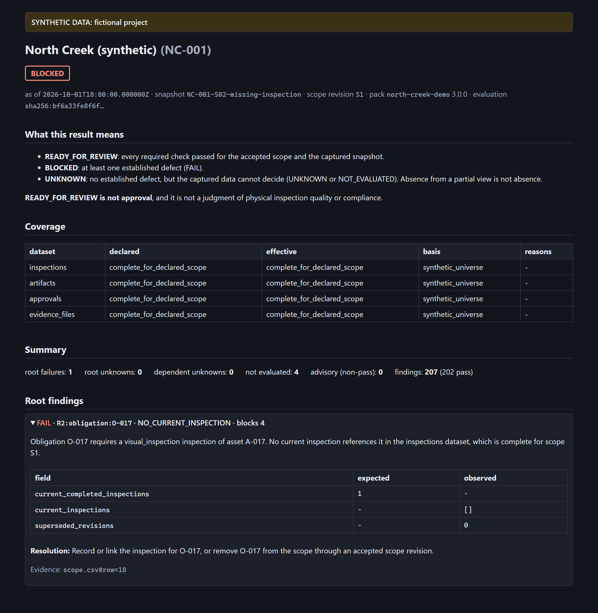

Never “ready” on evidence it could not see.
The work an accepted scope requires, against the inspections, documents and approvals actually captured. Every gap explained. Absence from a partial view is never a failure.